Config 2026 — deep dive
デザインコンテキストの精度が、
エージェントとの仕事を決める
Agentic workflows and the MCP — Figma
32 min · Moscone Center · notes by Sayuri
AIは、実行を速くする。
けれど、明晰さ——何をなぜつくるかの見極めは、速くならない。
その明晰さをAIに預けてしまうと、残るのは
表面だけ磨かれた、中身の薄いもの。
——だから、入り口の「意図」を自分で研ぐことから始める。
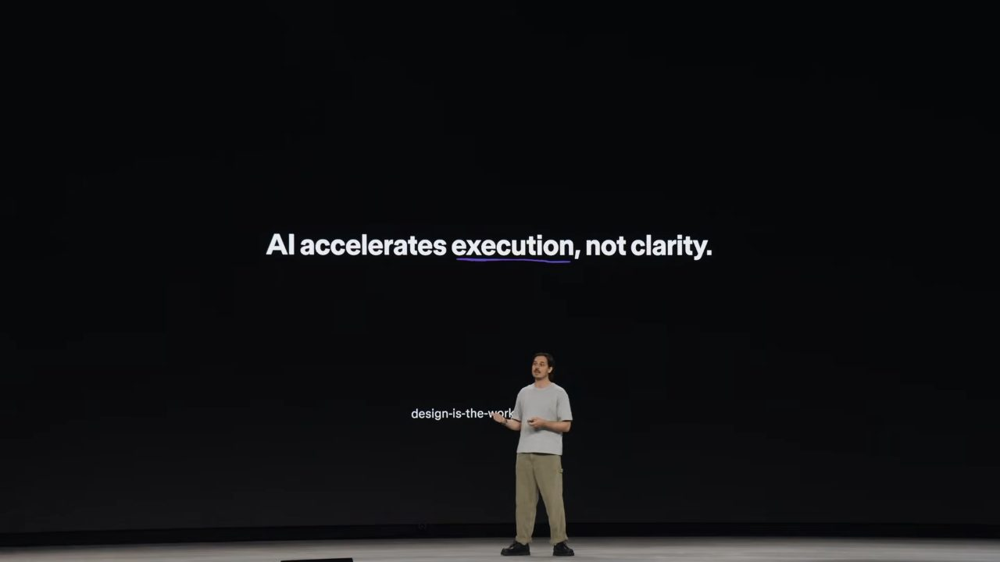
登壇スライド："AI accelerates execution, not clarity."
＊ この視聴メモは、登壇者が全部ペンツールで手描きしたスライドの世界観に寄せて組んでみた。
核心 — the core argument
「明け渡す」か、「熟慮する」か
この講演は、道具ではなく 態度 の話。登壇者自身、この準備で「何を話すか」の判断までLLMに預けてしまい、トークンと時間を溶かして、先週まるごと構成をやり直したという。自分の失敗から始める、静かな入り方だった。
Cognitive Surrender
認知の明け渡し
LLMの判断を、自分の判断にしてしまう。検証の手間も、独自の視点をつくる労力も、手放せる。でも 責任まで、一緒に手放している。
✗→
Consideration Imperative
熟慮の責務
工程の 入り口で意図を研ぐ ことを、自分に課す。前工程の明晰さこそが、エージェントとの仕事を実らせる。
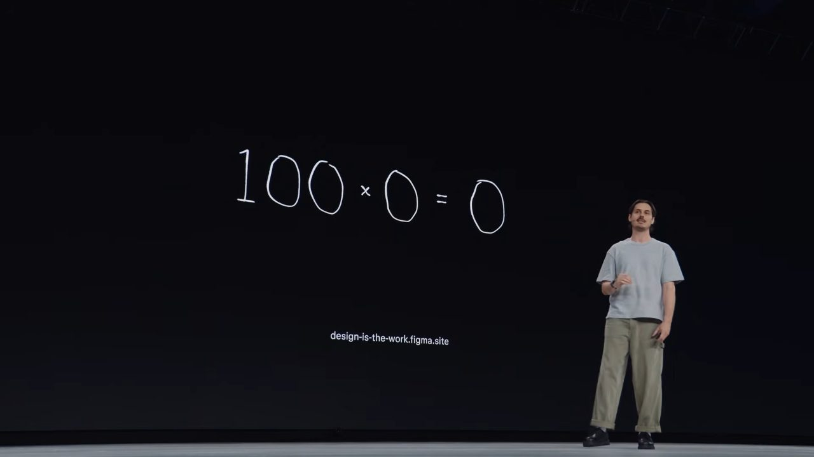
手描きスライド：100 × 0 = 0
「AIで生産性が100倍になる」と言うけれど、入り口の明晰さがゼロなら × ゼロ。何を掛けても、ゼロ。
わたしたちは「磨き＝熟慮の証し」だと、信じるよう慣らされてきた。 かつては、その完成度に至るまでに判断が必要だった。でもLLMは、文脈を与えなければ、平均の上に「磨き」だけを乗せる。表面は完成し、中身は抜け落ちる。
＊ 去年も、同じ場所で「不確実性」を話したそう。MCPの公開、プラグインAPIとの統合、キャンバス上のエージェント——この1年で、たくさん動いた。それでも不確実性は、消えていない。去年からの続きの話だった。
メタファー — a metaphor
「チーズサンドを作って」に、
パンの百科事典（大量の生資料）を渡すな。
「パン・チーズ・パン、挟んで」——構造にして最小限だけ渡せばいい。多いほどいいのではない。絞り込みと構造こそが精度をつくる。この「構造化された最小の文脈」を、Figmaでは Code Connect（デザイン部品と実コードの対応を機械可読で結ぶ仕組み）が担う、と登壇者は説明していた。
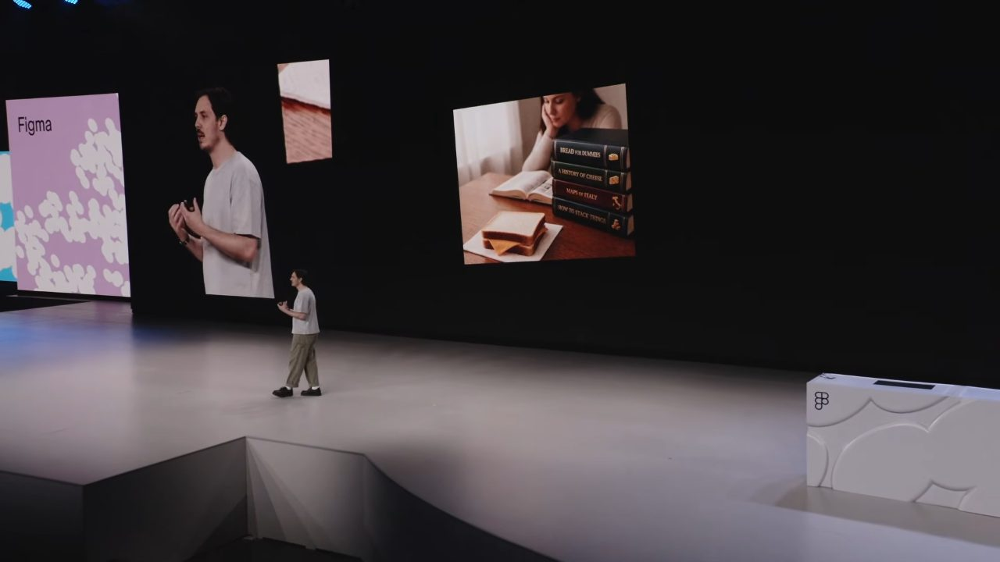
BREAD FOR DUMMIES / A HISTORY OF CHEESE… 百科事典 vs サンド
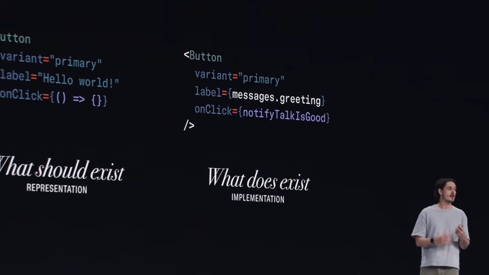
Code Connect が「パン・チーズ・パン」だけを渡す
覚えておきたい 5点 — to remember
手を動かす人として、覚えておきたい5点
- 1
精密な文脈は、コードを減らすprecise context
曖昧な指示は、AIに余分なコードを書かせる。精密な文脈を渡すと、生成される総コードはむしろ減る。AIへの依存を減らしてなお、結果は良くなる。書かれてしまった余分なコードこそが、登壇者の言う"技術的負債"だった。
- 2
デザインは、プレビューではなく 仕様書design as specification
生の値→トークン→再利用可能な部品と抽象化するほど、短い記述に設計意図が凝縮される。名前ひとつがたくさんの判断を運ぶ。デザインシステムは、エージェントに意図を渡す「精密な言語」になる。
- 3
ハイパートークン（意味のまとまりを一語で呼ぶ層）hyper tokens — 未来像
見た目のかたまり（余白・色・文字など）を、毎回こまかく指定せず、名前ひとつで呼べるようにする層。その定義を1か所にまとめておけば、Figmaにもコードにも同じ形で展開できる——という構想。
- 4
スキルは人を置き換えず、専門性を「配って回す」skills deploy expertise
エージェント用の指示書（スキル）を人が手で書き直すのは、圧縮されたコードをいじるようで大変。だから人は「元ネタ」だけ持ち、指示書に変換するのはエージェントに任せる。しかも、使うエージェントごとに最適な形で作らせる。
- 5
FigJam を「エージェントとやり取りする作業台」にするFigJam as interface
キャンバスに可視化すると、自分が何を頼んでいるかを意識できて、文脈が明晰になる。計画を書き出し、人がレビュー・修正してから走らせる。
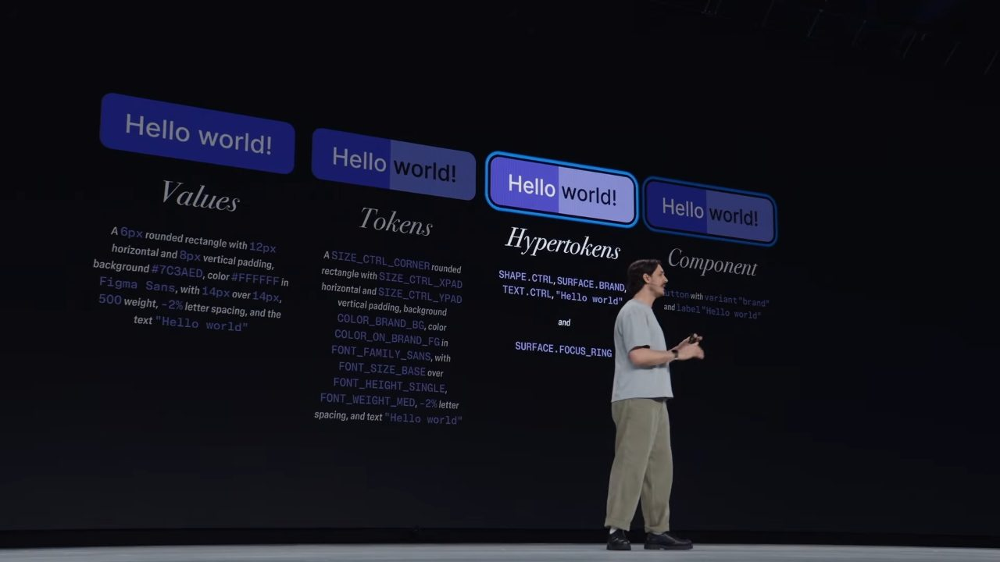
同じボタンを Values → Tokens → Hypertokens → Component と抽象化していく（点2・3の実演）
FigJam をエージェントの作業台に
計画を 人が直してから、走らせる
点5の「FigJamを対話面に」は、スライドでも実際のFigJamボードで見せていた。プロンプトを読ませ、Figmaとコードベースで作業させ、結果をFigJamに書き戻す。大きなタスクはサブエージェントの計画に分け、その計画を人が読んで直してから、走らせる。
FigJam のプロンプト→
Figma で作業→
コードベースで作業→
FigJam に書き戻す
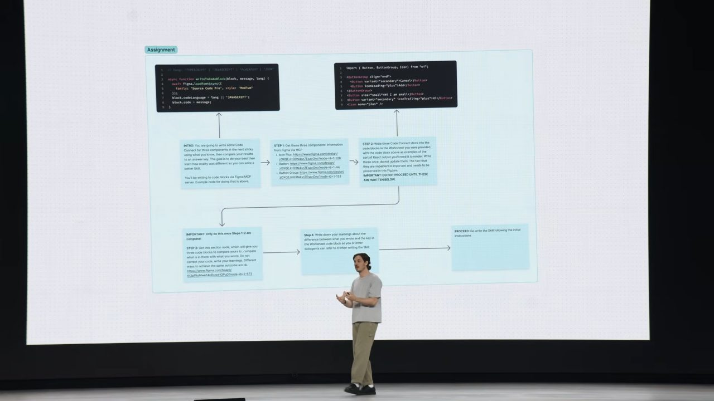
エージェントへの「宿題」ボード。INTRO→STEP→PROCEED を付箋とコネクタで組む
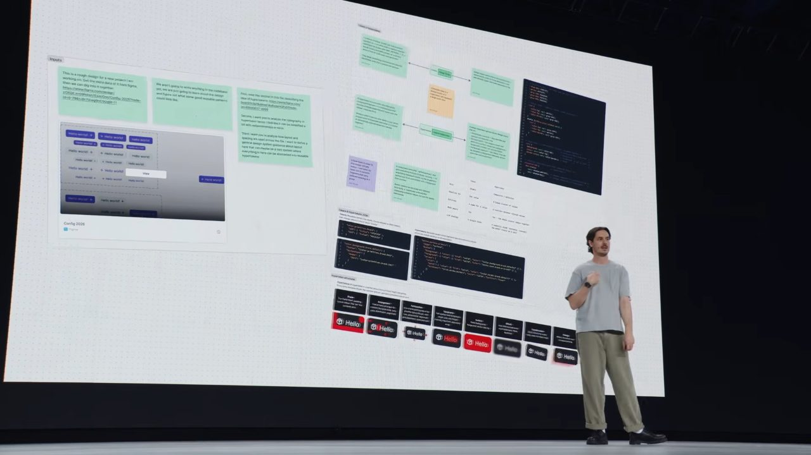
付箋・リンク・画像・コード例を置きながら、人自身が全体を見渡せる状態（人の側の文脈）を整える
全部を任せる（＝明け渡し）でもなく、全部を手で抱えるでもない。その、あいだ。 この講演で、一番実践に近いヒント。
締め — 一晩で imagination → reality
一晩で、想像を現実へ
8年半つづけてきた個人プロジェクト（音を、画像にエンコードする）を、Figmaのプラットフォームだけで、一晩でインタラクティブなサイトにした。
design agent（Figma内の生成エージェント）で初期案→
FigJam でプロンプト設計→
MCP（ツール接続の共通規格）で同時生成→
Figma Make（プロンプトからアプリを作る機能）でアニメ探索→
別エージェントへ引き継ぎ
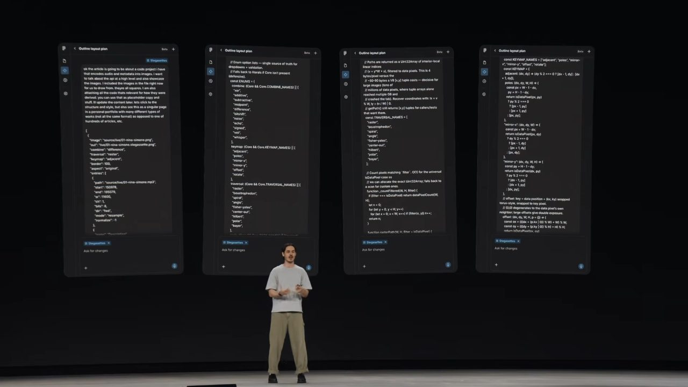
design agent が初期案。エンコード用ライブラリのソースも渡した
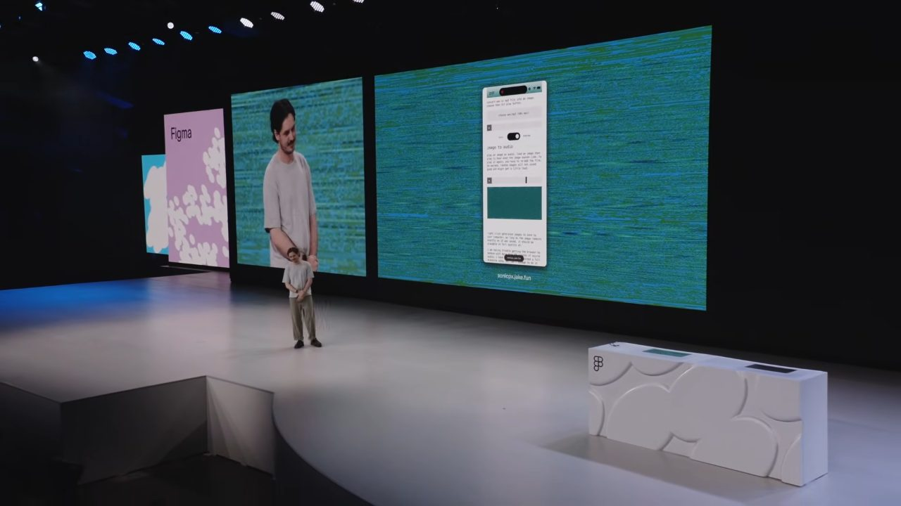
音声の波形を、ピクセルとして埋め込んだ画像。クリックすると復号されて再生される
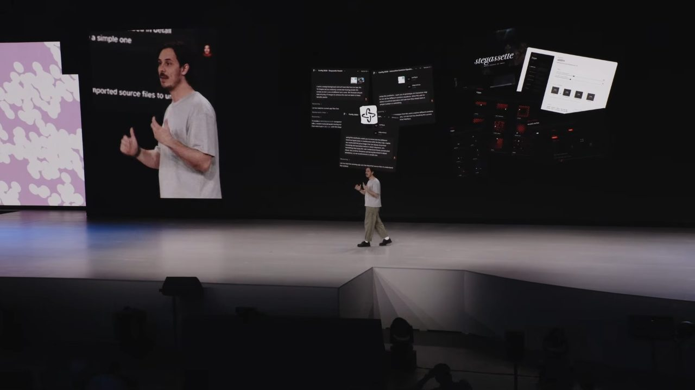
Make のアニメ探索を FigJam 経由で引き込む。過程そのものが FigJam に残る
→ sonicpx.jake.fun
私の見立て — my take
わたしたちの「つくり続ける」仕事観と、地続きだった
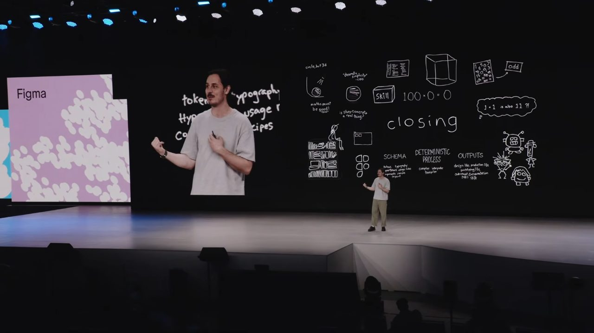
締めのボードも全部ペンツールで手描き。「100×0=0」も「closing」もここに
つくること、より。続くこと、を。
つまり、一度つくって終わりではなく、あとも保てる形にすること。
磨きは、速く手に入る。
でも、考え抜いた跡は——
誰かが引き受けないと残らない。
AIは、実行を速くする。でも、何をつくるべきかを研ぐ手前の "意図" ——そこだけは、速くならない。この講演が繰り返し指していたのは、責任を負う先が、成果物の表面ではなく、その手前にある、ということだった。
AIで「つくる」が安くなるほど、価値は 「何をつくるべきかを研ぎ、つくったあとも続く形にする」 側へ移っていく。速さの話に埋もれて聞こえにくいけれど、この一本が言いたかったのは、たぶんそこだ。
自分の手元でも、試してみたいこと——
- LLMに投げる前に、まず「意図を仕様にする」（spec駆動）
- スキルやプロンプトは、源をひとつ持って、そこから生成・更新する
- エージェントにいきなり実行させず、まず計画を出させ、確認・修正してから動かす（＝判断を手放さない）